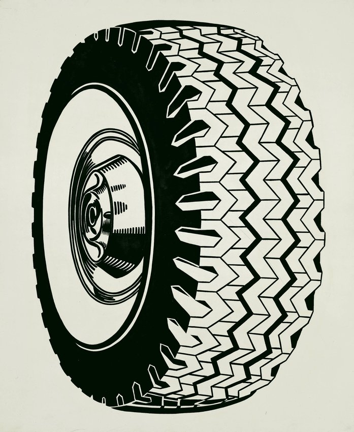

The Tire

Date Finished: 1962 Medium: oil on canvas Dimensions: 68 in. x 56 in. (172.72 cm x 142.24 cm)
In the early 1960s Lichtenstein found a rich source of imagery in advertisements and comic strips. Reacting against the introspection of the Abstract Expressionist painters of the previous generation, he adopted the vocabulary of American consumer and popular culture and the impersonal look of mechanical reproduction. Tire is one of the artists many early black–and–white, single–object paintings of an ordinary commercial product. The prosaic tire, magnified, takes on the emblematic authority of an icon. Formally, the paintings impact depends on the complex interplay between the graphically rendered realism of a generic industrial object and the geometric form of the tire suspended in a void.